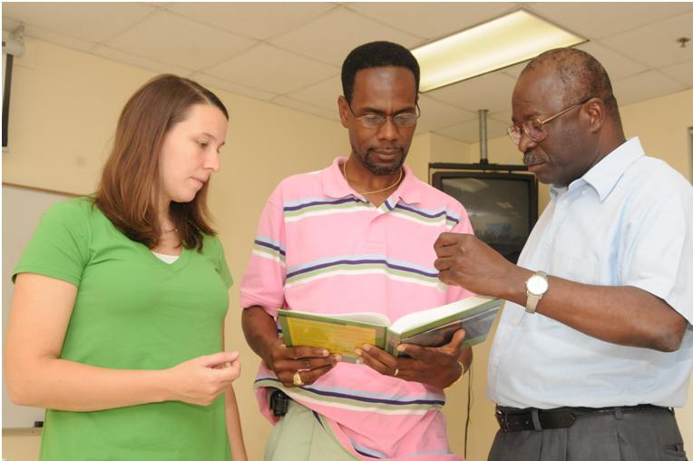

Student Activities advisory board (SAAB)
The Center for the African American Male (CAAM)
The purpose of SAAB is to enlighten the student body through the implementation of co-curricular and extracurricular activities on the campus of Albany State University. Considering that SAAB is a separate entity from SGA, this organization is able to provide direct service to students in the form of quality programming. The SAAB staff is hospitable at events and promotes school spirit and collaboration among students, faculty, staff and the local community.
The purpose of the Office of Student Life & Activities is to enhance student learning and the quality of campus life, to assist in the retention of students, to foster personal development, to promote an environment in which cultural diversity is valued and respected, and to improve the overall educational experience of students. The staff is responsible for providing assistance and resources in all aspects of program planning to student organizations, as well as campus departments.
Our mission is to provide both personal and professional customer service that transcends the Albany State University community by promoting student recruitment, retention, and holistic learning through the establishment of a safe, secure and inclusive environment, where students are free to express themselves and engage in co-curricular activities that encourage student leadership, ongoing development and total wellness in order to matriculate, graduate and successfully progress into a competitive workforce that will challenge them to utilize and maximize their full potential. This is accomplished through the promotion of student governance, cultural, intellectual, social, recreational, and leadership activities outside the classroom. The Office of Student Activities recognizes that its mission is accomplished through the close interaction of students, faculty, and staff working together to meet the extracurricular and co-curricular needs of the students attending Albany State University.
The Office of Student Life & Activities offers a number of programs and services to fulfill its mission. For example, the department is responsible for University Programming, Community Service Projects, Intramural Sports and Open Recreation, Greek Life, Judicial Affairs, Ombudsman functions, Student Leadership Development Programs, Student Government Association, Student Clubs and Organizations, Recreational Services, use of Sanford Hall Gymnasium, use of J.C. Reese Student Union Building, use of the new Student Center and use of ASU Grounds. The department also approves flyers, posters, handouts, and the like for distribution and posting on campus.
The Office of Student Life & Activities is also responsible for advising the following groups: Student Activities Advisory Board, Miss Albany State University & Royal Court, Mr. Royal Gentleman & Royal Gentlemen, ASU Pan-Hellenic Council, Paraprofessionals Promoting Peerfection Organization and the Student Government Association.
Events such as ASU by Candlelight, President’s Council Student Leader Dinners, Coronation, Homecoming, Miss ASU Pageant, Mr. Royal Gentleman Competition and the Student Government Association Elections are just a few other activities the Office of Student Activities sponsors.
The the new Student Center is a gathering place for the campus, creating a sense of community among students, faculty, staff, alumni and friends of Albany State University.
The Student Center is a “Living Rooms” for all students and for student life and activities. The facility is designed to support the fulfillment of cultural, educational, developmental, and recreational desires of all students of Albany State University. The Student Center is designed to provide a clean, comfortable, holistic and safe environment for both formal and informal events, as well as quality services, for the University and the ASU community.
Various programs and activities are planned and supervised by the Office of Student Life & Activities to broaden the experiences of each student.
The facilities and services of the Student Center is available for full use by students. The facility includes conference and meeting rooms, ball rooms, lounges, Recreational Centers, the ASU Bookstore, a Post Office, Laundry Services, Chick-fil-A, Einstein Brothers Bagels, ATM (Bank of America), Higher One Card System, and an information/customer service desk and vending machines. Offices include Student Government Association, Student Activities Advisory Board, Counseling and Disability Services, Student Life/Judicial Affairs, Recreation & Intramural Sports, Student Activities and the Vice President of Student Affairs. Normal hours of operation are from 8:00 a.m. – 5:00 p.m. on Monday – Friday. However, hours are subject to change due to student needs. There is also an on-campus Subway located in Hall 4 and Pizza Hut in Hall 6.
The University recognizes the role, which organized activities serve in enlarging the educational experiences of the members of the University community. Intellectual and personal growth takes place in student organizations, which have effective leaders and effective members. Students are encouraged to participate in programs provided by these organizations and the staff of the University serves to assist student organizations and programs. As a result, the University has adopted criteria for the approval of student organizations.
The Office of Student Activities shall review and act on all requests for such approval. Criteria for this approval and procedures to be followed in seeking approval are included in the Manual for Clubs and Organizations, published by the Office of Student Activities.
Organizations duly recognized under these policies and procedures enjoy certain privileges:
Concomitantly, approved organizations, as agencies within the University community, are responsible for conforming to University regulations and procedures as contained in the Student Survival Guide and the Student Handbook. Suggestions for revision should be brought to the attention of the Office of Student Life & Activities. There are various registered clubs and organizations on campus (affiliated with our office), including several Honor Organizations, Service Greek-letter Fraternities and Sororities, Social Greek-letter Fraternities and Sororities, General Interest & Departmental Organizations, Academic Organizations, International Organizations, Leadership Organizations, and Religious Organizations. These organizations have applied for and met all the qualifications to actively operate on campus. Meaningful involvement in such out-of-class experiences is likely to provide opportunities for the development of self-governance, leadership, decision-making, team building and planning skills.
Membership in these organizations is open to students in good standing, who meet the common-interest objectives of the organization and their own internal criteria and standards. The majority of these organizations should contact the advisor. Guidelines are also outlined for students wishing to establish their own student club or organization.
The Center for the African- American Male (CAAM) at Albany State University is dedicated to developing African-American men to be leaders in the community, the state of Georgia and the nation. Within the framework of applied culturally sensitive research, the center fulfills its commitment to improving the image, as well as the quality of lives of African-American families by addressing the developmental needs, interests and talents of male collegiate students and youth.
Through special programs and mentorship training the Center strives to improve the “total man” academically, spiritually and socially. CAAM participants give back to the community by mentoring, tutoring and otherwise contributing to Albany State University, the city of Albany and the Southwest Georgia region. Continually nurtured and supported in positive ways, participants of The Center for the African American Male will become successful leaders and contributors to a more just society.
